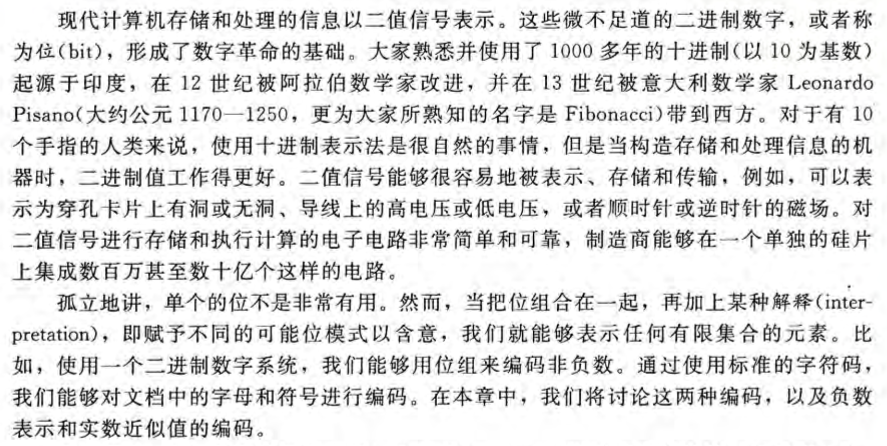
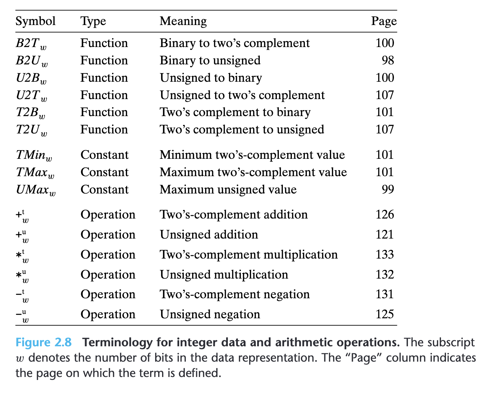
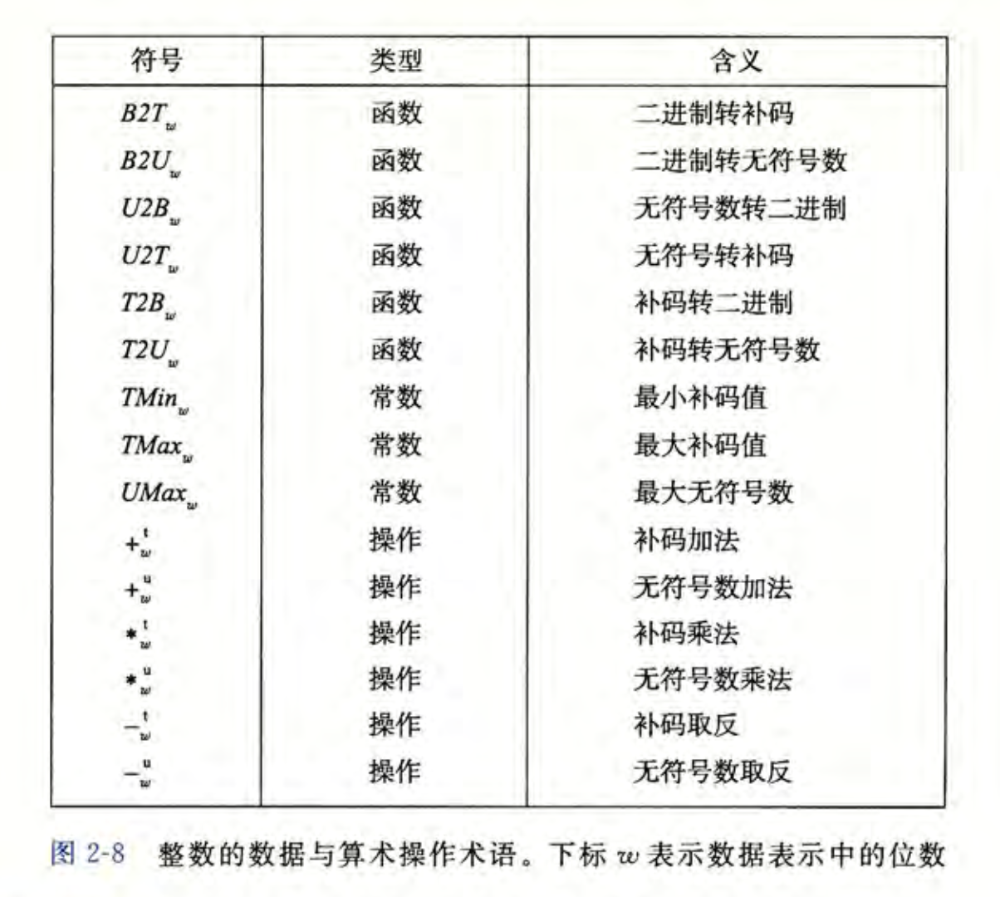

$$ \Huge \textbf{练习01} $$
$$ \boxed{ \overbrace{\textit{degaokaolization}}^{\small{去高考化}} \text{ Discussion Group | Work 01 for CSers}} $$
与高中枯燥无味的练习题不同, 这里的练习是很有趣的! 同样的, 如果大家有什么有趣的想法, 可以同样告诉我们!
很多同学有时候觉得电脑很难操作, 尤其是做PPT之类的尤为难搞. 现在, 我们提供一个探索带有图形界面的软件的思路: 当然不会很难, 我们相信只要会阅读汉字和一些简单的英语, 我们就可以做得很好.
一般而言, 就像小孩子玩乐一样, 你可以用玩游戏的方法首先玩一玩任何一个软件:
现在, 你可以看一看软件PowerPoint了! (或者你认为有趣的软件) 随便玩一玩, 然后看看有什么有趣的发现吧!
我们在阅读英语材料的时候, 会感到困难. 但是全文翻译很多时候很不靠谱. 比如会翻译出来很多生草的东西. 如果我们能选中一个词就立马跳出一个翻译结果该多好啊!
事实上, 现代浏览器为了拓展自己的能力, 有一个扩展的功能. 它就像Minecraft上面的mod一样. 现在, 我们可以给它安装上一个叫做 "侧边翻译" 的插件. (或者有任何其他的翻译功能的插件) 经过一些简单的设置之后, 就可以了.
似乎大家还是对于英语的一些术语感到生疏. 但不要急, 这是非常正常的现象. 但是英语有一个很好玩的现象: 它可以把很多单词的意思浓缩.
所以翻译过来的中文的很多废话就莫名其妙地消失了. 我们用下面的文本来体会一下:
Modern computers store and process information represented as two-valued signals. These lowly binary digits, or bits, form the basis of the digital revolution. The familiar decimal, or base-10, representation has been in use for over 1,000 years, having been developed in India, improved by Arab mathematicians in the 12th century, and brought to the West in the 13th century by the Italian mathematician Leonardo Pisano (ca. 1170 to ca. 1250), better known as Fibonacci. Using decimal notation is natural for 10-fingered humans, but binary values work better when building machines that store and process information. Two-valued signals can readily be represented, stored, and transmitted—for example, as the presence or absence of a hole in a punched card, as a high or low voltage on a wire, or as a magnetic domain oriented clockwise or counterclockwise. The electronic circuitry for storing and performing computations on two-valued signals is very simple and reliable, enabling manufacturers to integrate millions, or even billions, of such circuits on a single silicon chip. In isolation, a single bit is not very useful. When we group bits together and apply some interpretation that gives meaning to the different possible bit patterns, however, we can represent the elements of any finite set. For example, using a binary number system, we can use groups of bits to encode nonnegative numbers. By using a standard character code, we can encode the letters and symbols in a document. We cover both of these encodings in this chapter, as well as encodings to represent negative numbers and to approximate real numbers.
Extract from Representing and Manipulating Information, CSAPP.

另外, 你会发现翻译的过程事实上把原来的逻辑流搞得一团糟. 我们推荐使用英语的解释来理解英语. 汉语解释总是不能很好地传达它原本的意思.
如果上面的内容感觉无感的话, 下面来看一看这一部分的内容: 很多计算机的内容都是英语的缩写. 所以, 当发现有什么奇怪的缩写的时候, 顺便把它们的原来的单词也记下来吧!


很多时候阅读英语的教科书是很享受的.
阅读下面某个实验手册的一段话:
随着科学技术的发展, 在国际学术交流中使用英语已经成为常态: 顶尖的论文无一不使用英文来书写, 在国际上公认的计算机领域经典书籍也是使用英文编著. 顶尖的论文没有中文翻译版; 如果需要获取信息, 也应该主动去阅读英文材料, 而不是等翻译版出版. "我是中国人, 我只看中文"这类观点已经不符合时代发展的潮流, 要站在时代的最前沿, 阅读英文材料的能力是不可或缺的. 阅读英文材料, 无非就是"不会的单词查字典, 不懂的句子反复读". 如今网上有各种词霸可解燃眉之急, 但英文阅读能力的提高贵在坚持. "刚开始觉得阅读英文效率低", 是所有中国人都无法避免的经历. 如果你发现身边的大神可以很轻松地阅读英文材料, 那是因为他们早就克服了这些困难. 引用陈道蓄老师的话: 坚持一年, 你就会发现有不同; 坚持两年, 你就会发现大有不同. 撇开这些高大上的话题不说, 阅读英文材料和你有什么关系呢? 有! 因为在接下来的课程中陪伴你的, 就是没有中文版的手册和参考资料, 当然还有man: 如果你不愿意阅读英文材料, 你是注定无法学好计算机科学的.
$$ -\mathscr {E}\text{nd of the exercise}- $$